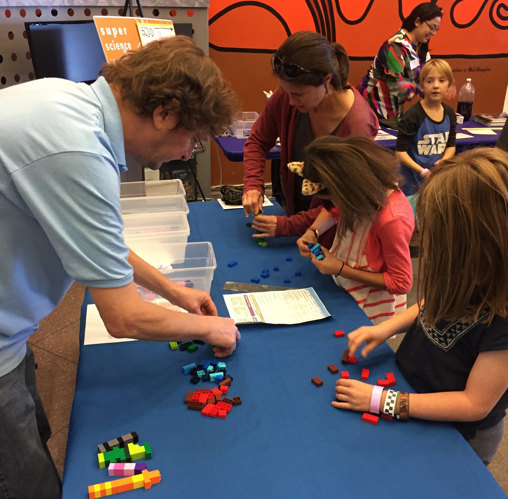

A snowy day at NCAR's Mesa Lab
|
A snowy day at NCAR's Mesa Lab |
|
December 8, 2017 I'll be attending the AGU Fall Meeting in New Orleans next week. My talk is on Friday December 15 at 1:40pm, part of session B53J: Integrated Understanding of Climate, Carbon, Nutrient Cycles, Human Activities, and Their Interactions in Terrestrial Ecosystems. Come hear about how solar geoengineering impacts vegetation and lots of other fun topics! November 7, 2017 Today I was honored to be a guest speaker at Mrs. Dana Wiegand's fourth grade class at Twin Peaks Charter Academy in Longmont. We talked about the difference between weather and climate, effects of climate change, and simple things kids can do to reduce greenhouse gas emissions (like turning off the lights when no one is in the classroom). We even had time to do the lego supercomputer activity which was a big hit. I loved talking to the kids about climate science and hope to be able to do it again in the future! 
November 4, 2017 Today I volunteered at NCAR's Super Science Saturday, a fun public science event held at the Mesa Lab where I work. I helped lead a lego activity for kids to learn about how supercomputers work. The legos were very popular and overall it was a great day of science!  October 19, 2017 New paper out in JGR Atmospheres! In this study we investigate the effects of solar geoengineering on regional climate variability, including extreme heat events. September 25, 2017 Today I start my postdoc at NCAR, where I will be working in the Climate & Global Dynamics Laboratory with the Terrestrial Sciences Section. September 13, 2017 Today I completed the last official requirement of my Ph.D. and presented my thesis in a public defense at Harvard. It was wonderful to share the day with many family members and friends! September 5, 2017 I was honored to be a recent guest on Radio Boise's Building a Greener Idaho. I spoke with Kris Wilson about geoengineering in a segment entitled "Big Solutions for Big Problems." Check out a recording of the session here. July 28, 2017 Today I successfully defended my Ph.D. thesis, "Exploring the Climate Impacts of Solar Geoengineering on Land-Atmosphere Interactions." Up next is preparing for my move to Boulder, Colorado where I will start my NCAR postdoc at the end of September. July 27, 2017 I was excited to be a part of the inaugural Gordon Research Conference on Climate Engineering, held this summer at Sunday River in Newry, Maine. It was great to connect with old friends and practice presenting my research before my Ph.D. defense. March 16, 2017 I was pleased to accept an offer for a postdoctoral fellowship from the Advanced Study Program at the National Center for Atmospheric Research. Now I turn my attention to wrapping up my Ph.D! January 29, 2017 I recently provided expert commentary for a Science in the News piece on the 2016 global temperature record. Check out the article here. |